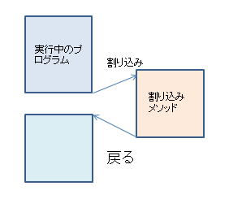
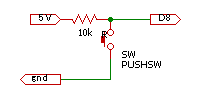
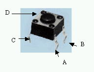
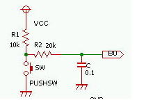

通常、コンピュータはメモリに記憶されたプログラム（命令）を順に実行します。しかし、MPU のハードウエア機能により、現在実行中のプログラムに割り込み、指定した命令群を実行することができます。割り込み機能は
Windows などの OS の中核制御になるため、自由にプログラムができませんが、組み込みコンピュータではこの割り込みを自由に楽しむことができます。
-
割り込み処理とは
通常、コンピュータ（CPU)はメモリに記憶されたプログラム（命令）を順に実行します。しかし、CPU の割り込み端子に信号が入ると、CPU は割り込み信号に対応する「メソッド」を実行する機能が組み込まれています。PCでは割り込み信号はキーボードやマウスなどの対話入力、ディスク・プリンタ・通信線からのデータの到着などで発生します。この割り込み機能により、アプリケーションプログラムはプログラムでは直接実行していないキーボードやボタンの入力を受け取ることができます。

割り込みのイメージ図
-
メソッドの定義と繰り返し命令
ここで、プログラムの重要な機能である「メソッド」について説明します。メソッドは C言語では 「関数」とも呼ばれます。これまで、「命令」として紹介した
pinMode() や digitalWrite()、analogWrite() もすべて「メソッド」と呼ばれるもので、digitalWrite(pim,HIGH)
などは「メソッドの呼び出し（実行）」になります。また、setup(){ , , } や loop(){ , , } などの { } の内部のプログラムは、setup()
メソッドや loop() メソッドの定義になります。
メソッドの定義の一般形は次のようになります。メソッドは終了するとき「値を返す」ことができます。最初に返す値の型を指定します。例の ｓｑｒｔ
は 平方根 の値を返すメソッドで、「パラメータ」で渡される x の値に平方根の値を「返し」ます。
返す値の型名 メソッド名（パラメータの型1 パラメータの変数名１、..）{ プログラム }
定義例 double sqrt( float x){ ; ; }
呼び出し例 dist = sqrt( x*x + y*y);
呼び出し例では ｘ と ｙ の2乗和の平方根を dist に記録しています。「パラメータ」は複数定義可能で、メソッドは渡された「パラメータ」の値を利用して処理を行い、結果を返すプログラムです。パラメータは 「引数」 とも呼ばれます。
引数で渡される配列の最大値を返すメソッド maxv() は次のように定義できます。最初に配列 x[] を定義しておきます。setup() の
println() で最大値を表示します。maxv(x,5) は配列 x とそのデータ数 5 の二つの「パラメータ」をもちます。
maxv() の定義では、まず、最初の値 data[0] を最大値として maxnum に代入します。次に、for による num 回の繰り返しで、maxnum
より大きな数があれば、maxnum の値を更新します。ここで、for 命令は次の構造を持ちます。
for(初期設定;繰り返し判断;繰り返し時の処理){ 繰り返し処理 }
例 for(int i=i;i<10;i=i+1){ ; ; ;}
for の内部は、3種の命令で構成されます。最初は繰り返し前の「初期設定」で、最初に一回のみ実行されます。次は、「繰り返しの判断」でを繰り返しを行うか否かの判断し、条件を満たす間繰り返し処理を繰り返し実行します。「繰り返し時の処理」は、「繰り返し処理を実行後」繰り返し毎に、この処理を行います。例の場合、最初、i
を 1 に設定し、i が10より小さい間「繰り返し処理」を行います。「繰り返し処理」を行うごとに、i を1つ増やします。
//メソッドの例
int x[5]={20,65,32,44,8};
void setup(){
Serial.begin(9600);
//最大値を表示
Serial.println(maxv(x,5));
}
void loop(){
}
int maxv(int data[],int num){
int maxnum=data[0];//仮の最大値
for(int i=i;i<num;i=i+1){
//より大きな値に入れ替える
if(maxnum < data[i]) maxnum=data[i];
}
//値を返す
return maxnum;
}
実行は、まず、 setup() が起動し、serial.begin() を実行します。次に Serial.println() に実行に入りますが、()
内の maxv() の値を求めるために、maxv（） を「呼び出し」ます。maxv を呼び出すと maxv(x,5) で、x が data 、5
が num に引き渡されます。その後、最大値を求める処理を行い、最後に return maxnum でmaxnum の値を メソッドの値として返します。これで、先の
Serial.println に戻り、maxnum の値を表示し、setup の実行が完了します。ついで、loop() の処理に入りますが、ここでは命令がないので、「ない命令」を繰り返すことになります。
-
Arduinoの割り込み機能
Arduinoでは、多くの機能に割り込みを利用しています。ここでは、スイッチ押し下げによる「外部割込み」機能と、シリアル通信受信に伴う、「割り込み処理」を紹介します。「外部割込み」では、D2,D5
端子が利用できます。この端子の状態が変化すると、次のように所定の（割り込み）メソッドを実行するよう設定できます。
attachInterｒupt( [0/1], メソッド名,モード);
例 attachInterrupt(0,extint,FALLING);
最初の [0/1] が割り込み端子の選択で、0 のとき D2 、１ のとき D5 端子となります。次は、「割り込み処理」をするメソッド名、最後がモードの指定になります。 モードは RISING のとき端子信号の立ち上り、FALLING のとき立下り、CHANGE のとき上がりまたは下がりの変化時 で割り込みを実行します。
-
外部割り込み回路
ここではスイッチと割り込み端子（D2)を利用して割り込みを実現します。下図で右の記号は押しボタンスイッチです。ボタンを押すと上下の丸い端子が導通します。すると、D2
の端子は GND と同じ 0V になります（下図D8をD2に訂正）。ボタンを離すと、10kΩの抵抗を通して D2 に接続するため、D10 の端子は電源の電圧（HIGH：5V）になります。このとき、D2
端子はLOW からHIGH に立ち上がり、RISING 状態になります。

スイッチ回路 スイッチ素子
ここで使用するスイッチは、ブレッドボードに挿入できる小型のスイッチ（タクトスイッチ）です。A-C と B-D間は内部で接続されています。ボタンを押すと
A-C端子とB-C端子が接続します。
-
スイッチの「チャタリング」現象
機械式スイッチの特性として、スイッチの操作時に「チャタリング」と呼ぶ現象が発生します。スイッチを押すとオンになりますが、詳細にみると一回のオンではなく、スイッチの端子の跳ね返りでオンーオフを数回繰り返します。オフにする場合も同様です。chatering
は「がたがたなる、ぺちゃくちゃしゃべる」の意味です。
この現象を回路的に避けるには、下図のように抵抗とコンデンサーを利用します。コンデンサー（C)は電気を蓄える機能があり、スイッチがオフのとき、コンデンサは充電されています。スイッチをオンにすると、コンデンサを放電して電圧が下がります。このとき、スイッチが「チャタリング」しても、コンデンサの電圧は急変しないのでミスカウントしません。
スイッチを離すと、コンデンサを充電しながら電圧が上がります。ここでも、「チャタリング」によるオン・オフをコンデンサが吸収してくれます。電気を水、コンデンサをダムと考えると、ダムに入る（出る）水量が多少変化してもダムの水位（電圧）は大きくは変化しません。

チャタリング対策回路
-
String と文字列
ここで、char(文字) と String（文字列）を紹介します。 char は1文字を記録する変数の型で、char ch ; は字型変数
ch を定義します。一方、String は文字列（複数の文字）を記録可能な変数の型で in は文字列を記録します。String 型の変数は +
演算で文字や文字列を結合できます。
ch = Serial.read(); で受信した文字を受け取り、 ln += ch ; では ch をin に追加します。 += は複合演算子で、
in = in + ch ; と同じ意味です。
String in = "as";
char ch = Serial.read();
in += ch;
-
シリアル割り込み受信
void serialEvent() は「受信割り込み」専用のプログラムで、（RS)シリアル受信があると、内部の受信回路でデータを受け取り、serialEvent() メソッドを「割り込み処理」してくれます。Serial.available() は受信したバイト数を返すメソッドで、受信の有無を確認できます。Serial.read() は受信した文字を読み取るメソッドです。
割り込みを利用しないで、loop() の中で Serial.read() をすることも可能ですが、loop() の中で、delay(50 )
など時間のかかる処理をしていると読み損ねてしまいます。
-
割り込みプログラム
以下は、割り込み実験プログラムです。 D2 端子にスイッチ、D13 端子に LED が接続されているものとします。attachInterrupt(0,extint,FALLING);
は D2 端子の信号の「立下り」で、extint() 関数を呼び出します。extint() は呼び出されると、state の状態を反転します。ｌｏｏｐ
ではstate の値で D13 に接続された LED を点灯します（D13にはボード上にLEDが実装されています）。ボタンの押し下げで LED
が反転します。
extint() ではソフト的なチャタリング防止回路が組み込まれています。millis() はプログラム起動後の時間をミリ秒単位で返すメソッドです。最近の割り込みから
bounce 以内の割り込みはチャタリングによる割り込みと考えて無視します。bounce の値を小さくすると、チャタリング現象のため、LED
が正しく オンーオフしなくなります。また、ボタンを押し下げた時でなく、離したときにも点滅が起ることがあります。このチャタリングは コンデンサーによる 防止回路でも軽減できます。
//スイッチ押し下げでLEDが反転する
//bounceはスイッチのチャタリング時間
//シリアル受信割り込み
//シリアルモニター下 LFのみ をチェック
int led=13;
int bounce=100;
int ct,pt;
volatile int state =LOW;
String in="as";
byte ok;
void setup(){
Serial.begin(9600);
pinMode(led,OUTPUT);
//割り込み0の処理関数設定
attachInterrupt(0,extint,FALLING);
ok=0;文字列を受信したら１
}
void loop(){
digitalWrite(led,state);
if(ok==1) {
Serial.print(in);
in="";
ok=0;
}
}
//スイッチ割り込み処理
void extint(){
ct=millis();
if((ct-pt)>bounce)
state=!state;
pt=ct;
}
//シリアル割り込み処理
void serialEvent(){
char ch;
if(Serial.available()>0) {
ch=Serial.read();
in += ch;
}
if(ch == '\n') ok=1;
}
このプログラムには、シリアル受信割り込みも組こまれています。serialEvent() はデータ受信があると呼び出され、ここで、Serial.read() で受信した文字 ch を 文字列 in の最後に + 演算でつなぎます。改行コード（\n）を受信すると、ok を１とし1行受信を知らせます。loop でこれを検出すると、シリアルに1行出力します。
この実験で UNO に文字列を送るには「シリアルモニタ」を利用します。シリアルモニタを立ち上げ、先頭の行に文字列を入力し、「送信」ボタンをクリックします。このとき、モニター最下行で
「LFのみ」をチェックしておきます。
-
発展
-
タイマー割り込みはできませんか？
タイマー割り込みは一定時間間隔で割り込む処理です。「MsTimer2.h 」ライブラリーを組み込んで使用します。 詳細は 「多桁数字表示」の節を参照してください。
-
スリープ状態から割り込みがかかりますか？
UNO(MINI)は set_sleepmode(モード) で、モードを設定し、sleep_mode() で スリープ状態に入ります。SLEEP_MODE_PWR_DOWN モードの場合多くの内部機能を停止し、外部からの割り込みしか受け付けなくなります。